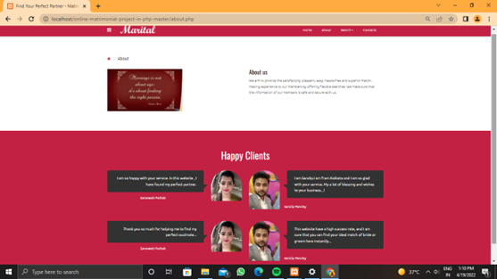

An online matrimonial website serves as a digital platform that connects individuals seeking life partners, catering to diverse communities, religions, cultures, and preferences. It simplifies the matchmaking process by leveraging technology to help users find compatible matches efficiently and conveniently.